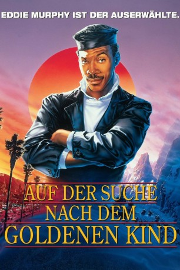
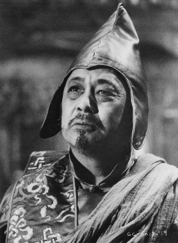
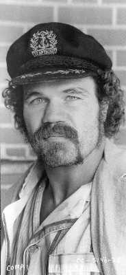

#12040 Auf der Suche nach dem goldenen Kind
Alternativ: The Golden Child (Englischer Titel)
 
 IMDB-Wertung: 6.0 / 10
IMDB-Wertung: 6.0 / 10  Tomatometer: 26
Tomatometer: 26  Metascore: 37
Metascore: 37 
Alle tausend Generationen wird auf der Erde ein "Goldenes Kind" mit magischen Kräften geboren und als Gott verehrt. Die Entführung dieses Kindes versetzt die tibetanische Welt in Aufruhr. Durch ein Orakel wird Chandler in Los Angeles ausgewählt das Kind zu finden und aus den Krallen des Bösen zu befreien. Zur Seite steht ihm die exotische und mystische Kee Nang, die Chandler dank ihrer Kung Fu-Ausbildung mehrmals aus der Klemme helfen kann. Nach aufregenden Abenteuern im Himalaya, wo die Suche nach einem verwunschenen Schwert unter Todesgefahr gelingt, sehen sich die beiden ihrem Ziel plötzlich sehr nahe...
Jahr: 1986
Dauer: 89 Minuten
FSK: 12
Land: USA Studio: Paramount PicturesTonspuren: DD2.0 - ,
Untertitel:
Auflösung: 1080p (1920x1080) Größe: 10014 MB
Genre: Action, Komödie, Abenteuer, Fantasy, Mystery
Regisseur: Michael Ritchie
Drehbuch: Dennis Feldman
Soundtrack: Michel Colombier
Darsteller:
 Eddie Murphy als Chandler Jarrell
Eddie Murphy als Chandler Jarrell Charles Dance als Sardo Numspa
Charles Dance als Sardo Numspa- Charlotte Lewis als Kee Nang
-  Victor Wong als The Old Man
-  Randall 'Tex' Cobb als Til
 James Hong als Doctor Hong
James Hong als Doctor Hong- Pons Maar als Fu
- Peter Kwong als Tommy Tong
- Eric Douglas als Yellow Dragon
- Charles Levin als TV Host
 Frank Welker als The Thing
Frank Welker als The Thing Conrad Hurtt als Monk (uncredited)
Conrad Hurtt als Monk (uncredited)- Aron Kincaid als Informer (uncredited)
- J.L. Reate als The Golden Child
- Shakti Chen als Kala
- Tau Logo als Yu
- Tiger Chung Lee als Khan
- Wally Taylor als Detective Boggs
- Kenneth H. Frith Jr. als Friend at Pink's
- Bennett Ohta als Herb Shop Clerk
- Kinko Tsubouchi als Old Chinese Woman
- Govind Chipalu als Jabbering Old Man
- Chantara Nop als Security Man #1
- Phok Ok als Security Man #2
- Bob Tzudiker als Businessman Customer
- Cliffy Magee als Russell
- Jeff Soo Hoo als Waiter
- Bindra Joshi als Chicken Lady on Plane
- Judy Hudson als Tortoise Lady
- Ron Packham als Buttonman
- Marilyn Schreffler als Kala
- Lorenzo Gaspar als Nepal villager (uncredited)
- Gene LeBell als Drunken Biker (uncredited)
- Ron Veto als Yak herder (uncredited)
Datei: X:\1986\Auf der Suche nach dem goldenen Kind (1986, FSK12, 1920x1080).mkv seit 16.11.2019
Festplatte: Gemischt-01+Anime
 Es gibt insgesamt 50 Filme in der Gruppe '1986'
Es gibt insgesamt 50 Filme in der Gruppe '1986'